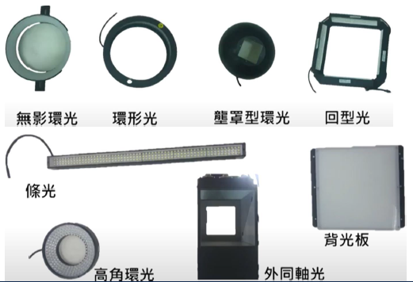
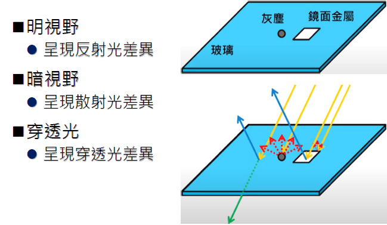
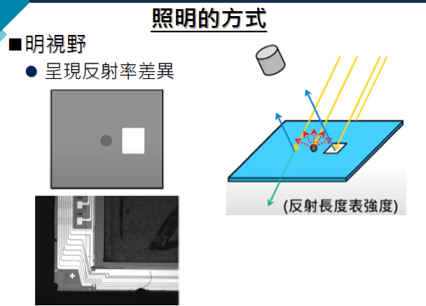
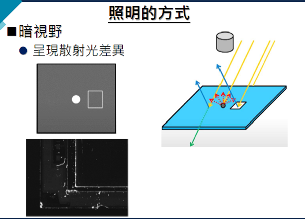
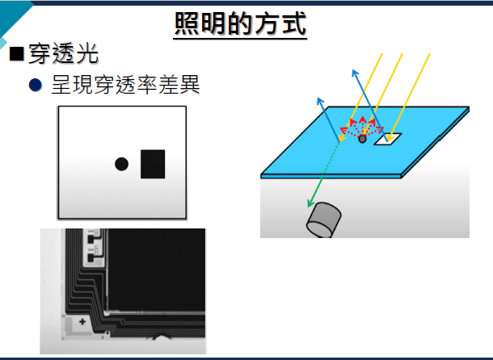

不同的打光方式（環形光、條形光、背光）會產生完全不同的檢測效果。移動滑鼠或觸碰下方區域來模擬光源方向：

Lighting Design
不同的打光方式（環形光、條形光、背光）會產生完全不同的檢測效果。移動滑鼠或觸碰下方區域來模擬光源方向：
透過適當照明突出檢測目標，使關鍵特徵更加明顯
減少不必要的背景訊息，提升檢測精準度
增強特徵與背景的差異，使影像更易於分析
良好照明確保一致性，減少環境變化影響

暖色連續光譜，適合需要自然陰影與表面起伏觀察的靜態檢測，但發熱量高。
色溫：3000-3400K
優點：亮、暖色調、低電壓操作
缺點：大量熱、5% 效率，壽命短、老化快、無閃頻、壽命短
色溫：4000-4600K
亮度高、發熱量大
色溫：5500-12000K
優點：接近日光、強度高(200 次/秒，高亮度閃光 (1~20us))
缺點：供電複雜且昂貴
色溫：可調
低熱、低 耗電、成本低、亮度高、亮度易控制、發光效率佳、壽命長、可閃頻控制、可組成任意形狀
白光：藍光 黃色燐光劑
色溫：3000-6000K
優點：便宜、大面積
缺點：壽命短、老化快、無閃頻、光譜分布不均
正向反射回到鏡頭，金屬平面亮且均勻，刮痕與反射差異容易被辨識。

呈現反射光差異
✅ 適合鏡面金屬

呈現散射光差異
✅ 適合灰塵、瑕疵

呈現穿透光差異
✅ 適合玻璃

光源直接照射物體表面
✅ 適合表面檢測
光源位於物體背後
✅ 適合輪廓檢測、透明物體
光源與相機同軸
✅ 適合反光表面檢測
環形光源圍繞鏡頭
✅ 提供均勻照明
線性光源
✅ 適合線掃描相機
低角度斜向照明
✅ 突出表面缺陷
漫射光源
✅ 消除陰影和反光
620-750nm
穿透力強
495-570nm
人眼最敏感
450-495nm
解析度高
<400nm
螢光檢測
>750nm
穿透檢測
影響物體顏色呈現，需根據檢測需求選擇
穩定但發熱，適合長時間檢測
高亮度、低功耗，適合高速檢測